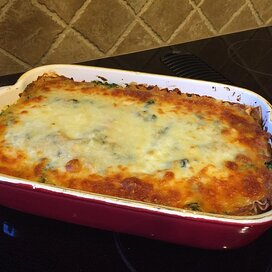

Lasagna Recipe

Debbie's Vegetable lasagna
Delicious vegetable lasagna with a white creamy sauce.
A family favorite!
List of Ingredients
- 9 lasagna noodles
- ¼ cup margarine
- ¼ cup all-purpose flour
- 1 cup milk
- ½ cup vegetable broth, or as needed
Steps
- Bring a large pot of lightly salted water to a boil. Cook lasagna in the boiling water, stirring occasionally until cooked through but firm to the bite, about 8 minutes. Drain.
- Preheat oven to 375 degrees F (190 degrees C).
- Melt margarine in a skillet over low heat; cook and stir flour, salt, and pepper into the melted margarine until smooth and bubbling, 2 to 3 minutes. Add milk and broth into flour mixture, stirring constantly; bring sauce to a boil. Stir wine into sauce and remove from heat. Stir Parmesan cheese into sauce until smooth.